Interfaces - part 2
ADC (Analog to Digital Converter)
- In the physical world: an analog signal is continuous in time and in amplitude
- In a computer: data is discrete in time and in amplitude
- ADC: transforms an analog signal into (a sequence of) data

Quantization: maps a continuous set of values to a finite set of values
- With 4 bits: 16 values
- With 12 bits: 4096 values
- With 15 bits: 32,768 values
- With 24 bits: 16,777,216 values
- With 32 bits: around 4.3 billions of values
Whatever the number of bits, there are always continuous values which are not part of the finite set of values. Quantization error: difference between the continuous value and the quantized value.
Resolution: number of bits.
Sampling: periodically quantizing the continuous value
Sample rate: sampling frequency
Nyquist–Shannon sampling theorem: the sample rate must be at least twice the bandwidth of the signal.
- Sufficient condition to capture all the information from a continuous-time signal of finite bandwidth
Some sampling rates
- Legacy analog telephone: 8 kHz (good human sounding voice: 300 - 3400 Hz)
- Audio CD: 44.1 kHz
Usually: samples/s - sps, ksps, Msps
Reference voltage
The ADC needs a reference voltage to which it compares the incoming analog voltage.
The ADC cannot measure voltages larger than the reference voltage.
Depending on the microcontroller, the reference voltage may be internal or external. Several references may be available.
Input selection
For some microcontrollers: the ADC block can support measurement on a number of internal and external signals.
Voltage adaptation
Depending on the signal to be converted, amplification or attenuation can be required.
The microcontroller can provide some adaptation means.
ADC and ML application
- Check battery voltage, and reduce the number of tasks when too low
- Convert microphone signal, to perform wake word detection
- Convert pressure sensor signal, to perform local weather forecast
- Etc.
Practice session 04
Convert an analog signal
- Follow the instructions provided by the
embedded-systems-for-ML/practice-sessions/04-Adc/README.mdfile.
UART (Universal Asynchronous Receiver/Transmitter)
- GPIO: set/get 0 or 1
- ADC: get the approximate value of a signal
- UART: exchange data
- Universal: can be used in many different contexts
- Asynchronous: no common clock required between the receiver and the transmitter
Data is transmitted bit by bit.
Physical layer
Electrical levels:
- V.28: -15 V to -3 V and +3 V to +15 V
- 0 and 5 V
- 0 and 3.3 V
- ...
- Distance: < 15 m
- Maximum speed: 20 kb/s (according to V.28)
- On short distances: 115 kb/s or more
Connectors: DB9 or DB25 D-subminiature connectors
 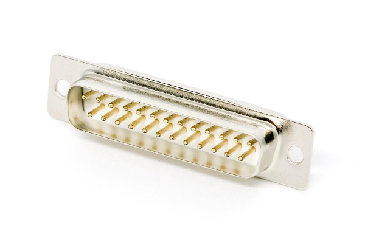
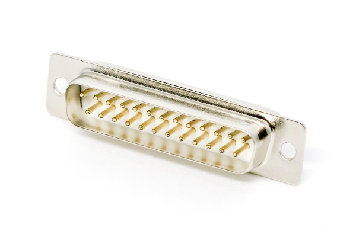
20 years ago: every PC had one UART port at least, named serial port or COM port
For today's PCs: serial-USB adapters

Data transfer:
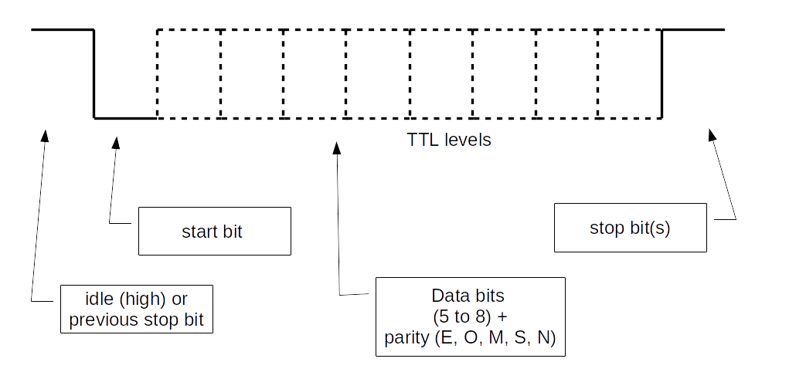Important:
- Each side must be configured in the same way (speed, parity, etc.)
UART and ML application
- Collect data from a sensor
- Update the embedded application with a retrained model
- Etc.
Practice session 05
Get acquainted with the UART
EFR32MG24
Functional diagram:

The UART is actually a USART: Universal Synchronous/Asynchronous Receiver/Transmitter.
Synchronous part presented in later sections.
EUSART: an additional UART which can be used in low-energy mode.
Block diagram:
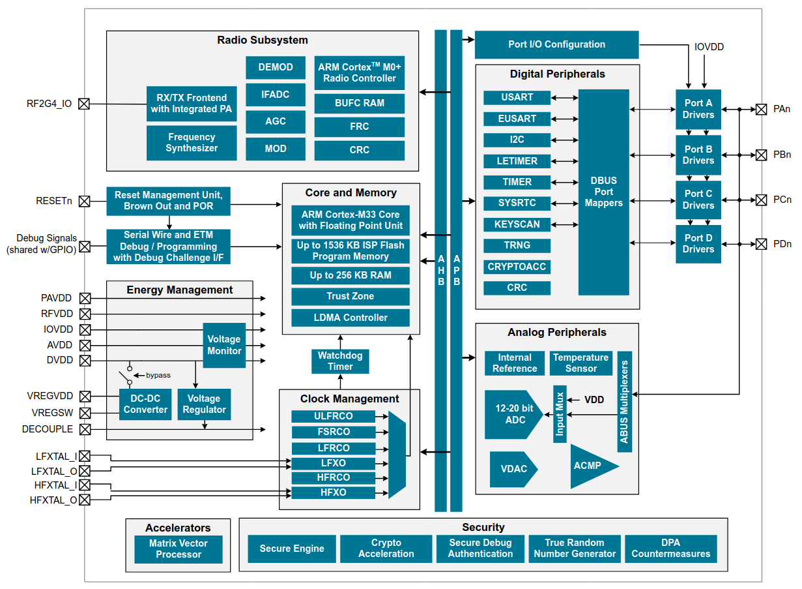- Several blocks between USART signals and µC pins
- Each block must be configured
xG24 Dev Kit
- No more serial connectors on modern PCs
- USB allows to transport virtual serial ports
- On Dev Kit: USB on PC side, UART on µC side
- On-board debugger is used as a gateway
Block diagram:
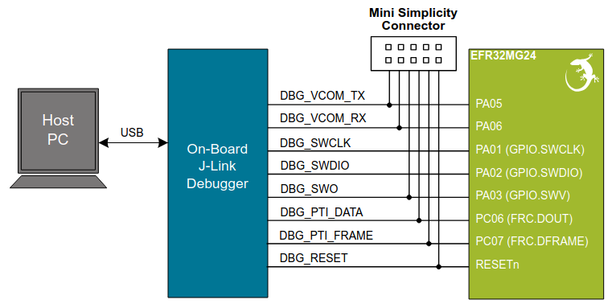Practice session 05 - step 1
- Purpose: send characters to the PC
- What to do: follow the instructions provided by the
embedded-systems-for-ML/practice-sessions/05-Uart-step1-board/README.mdfile
Practice session 05 - step 2
- Purpose: echo characters sent to the board
- What to do: follow the instructions provided by the
embedded-systems-for-ML/practice-sessions/05-Uart-step2-board/README.mdfile
Some serial port deficiencies
- About 20% of overhead (1 start bit + 1 stop bit)
- Both sides must be configured in the same way
- TX must be connected to RX. Or not
- Connects two devices only (for V.24)
Interfaces presented in next sections provide other kinds of solutions.
SPI (Serial Peripheral Interface)
SPI is an a synchronous protocol with:
- Two roles: controller and peripheral
- A clock is provided by the controller
- Four wires:
- SCK (Serial Clock)
- PICO (Peripheral In Controller Out)
- POCI (Peripheral Out Controller In)
- CS (Chip Select)
(Power lines not shown)
Multiple peripherals:
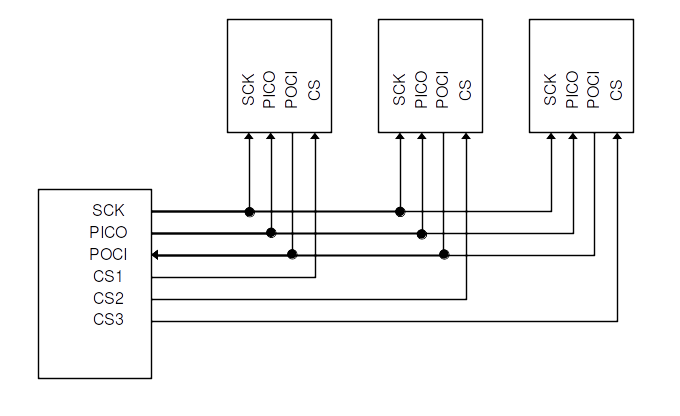(Power lines not shown)
Note: wires were previously known as MOSI (Master Out Slave In), MISO, SS (Slave Select).
You may still come across these names.
SDO (Serial Data Out) and SDI (Serial Data In) may also be used.
Data is synchronized with the clock. Several possible configurations:
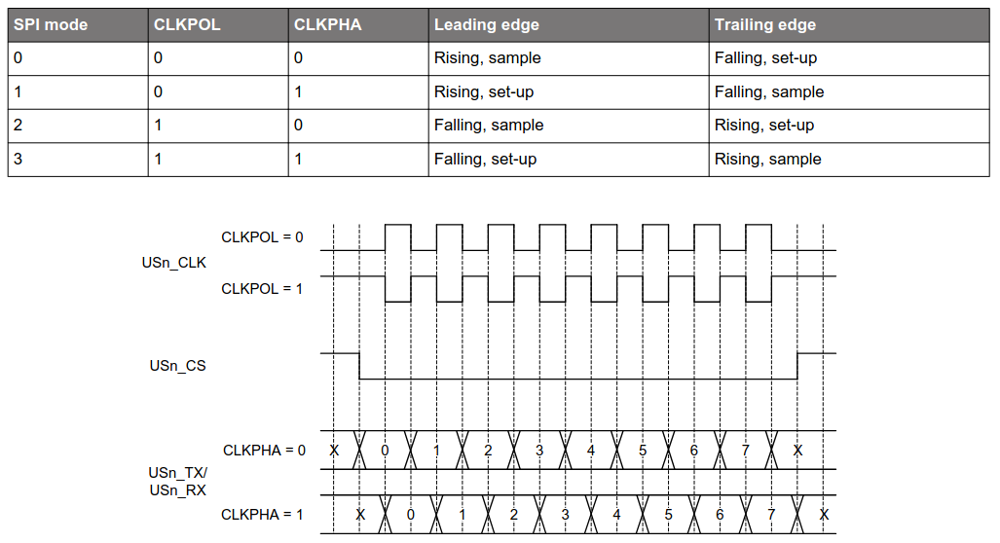The protocol allows full-duplex operations.
The controller controls the clock.
When multiple peripherals are connected, the controller uses the CS signal to activate the peripheral it wants to interact with.
- Maximum speed: up to 10 Mb/s.
- Maximum distance: a few tens of cm.
How data is exchanged
The data protocol is defined by the peripheral.
Quite often: the peripheral interacts through registers.
Registers can be read and/or written.
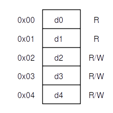A generic example
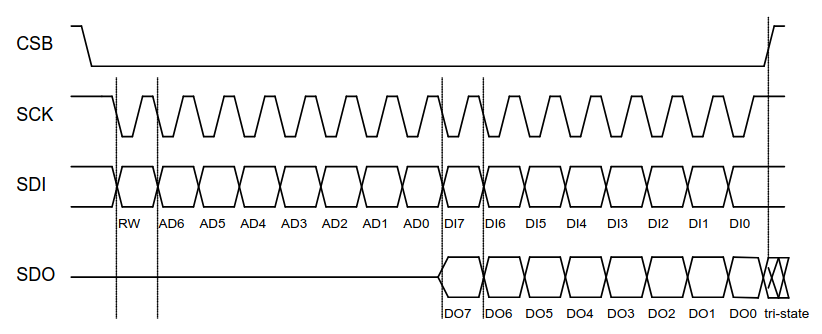Read operation
- The controller selects the peripheral (CS low) and starts the clock
- On PICO: the controller sends MSB set to 1 + register address on 7 bits
- On POCI: the peripheral sends data over 8 bits
- If clock goes on and CS is not raised, the peripheral sends next register
- ...
Write operation
- The controller selects the peripheral and starts the clock
- On PICO: the controller sends MSB set to 0 + register address on 7 bits
- On PICO: the controller sends data over 8 bits
- The controller stops the clock and raise CS
To summarize:
- Serial port: allows for more than several meters
- SPI: short distances, higher speed
Practice session 06
Get acquainted with the SPI bus
On the EFR32MG24
- The SPI interface is implemented over the (E)USART interface
- This explains the "S" in the USART acronym
On the xG24 Dev Kit
- The IMU (Inertial Measurement Unit) can use SPI
- 3-axis gyroscope, 3-axis accelerometer, temperature sensor
Block diagram:
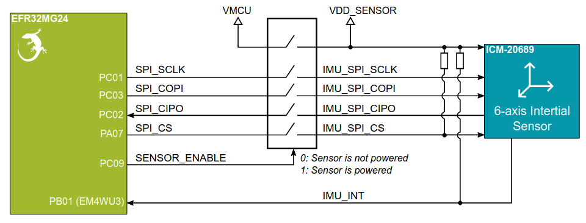- A switch controls sensor power
- Pullup resistor on CS ⇒ sensor not selected by default
- SPI signals are connected to PC and PA ports
Practice session 06
- Purpose: get accelerometer data
- What to do: follow the instructions provided by the
embedded-systems-for-ML/practice-sessions/06-Spi-accel/README.mdfile
Reducing the number of wires
SPI with multiple peripherals:
Many wires...
I2C (Inter-Integrated Circuit)
I2C is another synchronous protocol with:
- Two roles: controller and peripheral (target)
- Multiple controllers can be present
- Two wires:
- SCL (Serial Clock line)
- SDA (Serial Data line)
(Power lines not shown)
Multiple peripherals:
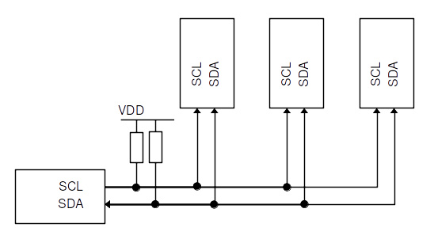(Power lines not shown)
- Each device has a unique 7-bit address (no CS signal)
- The controller provides the clock
- Every byte is acknowledged by a bit
When multiple controllers are connected:
- Clock synchronization
- Arbitration
Done thanks to wired-AND connections of SCL and SDA and pullup resistors.
For more information: I2C-bus specification and user manual
- Standard-mode speed: 100 kb/s
- High-speed mode: 3.4 Mb/s
- Maximum distance: a few tens of cm.
How data is exchanged
The data protocol is defined by the peripheral.
Quite often: as for SPI, the peripheral interacts through registers.
Registers can be read and/or written.
Read operation
- The controller sends the register address in write mode to the peripheral address
- The peripheral sends out data from auto-incremented register address until the controller stops the interaction
Detailed view:
- The controller sets a START condition
- The controller sends the peripheral address over 7 bits + LSB set to 0
- The peripheral sends an ACK bit
- The controller sends the register address
- The peripheral sends an ACK bit
- The controller sends a START condition
- The controller sends the peripheral address over 7 bits + LSB set to 1
- The peripheral sends an ACK bit
- The peripheral sends data
- The controller sends an ACK bit
- The peripheral sends next register, until the controller sets a STOP condition
Write operation
- The controller sends the register address in read mode to the peripheral address
- Then it sends pairs of register address and register data until it stops the interaction
Detailed view:
- The controller sets a START condition
- The controller sends the peripheral address over 7 bits + LSB set to 0
- The peripheral sends an ACK bit
- The controller sends the register address
- The peripheral sends an ACK bit
- The controller sends the register data
- The peripheral sends an ACK bit
- The controller goes on sending register address and register data until it sets the STOP condition
To summarize:
- Allows for multi-controller configurations
- More complex than SPI to implement. But that's not your problem 🙂
Practice session 07
Get acquainted with the I2C bus
On the EFR32MG24
- The I2C interface is a standalone block
On the xG24 Dev Kit
- The relative humidity and temperature sensor uses I2C
Block diagram:
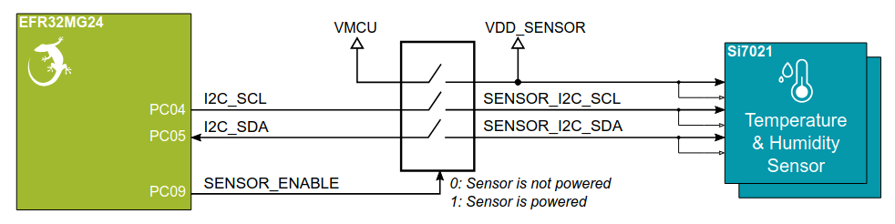- A switch controls sensor power
- I2C signals are connected to PC port
Practice session 07
- Purpose: get temperature data
- What to do: follow the instructions provided by the
embedded-systems-for-ML/practice-sessions/07-I2c-temp/README.mdfile